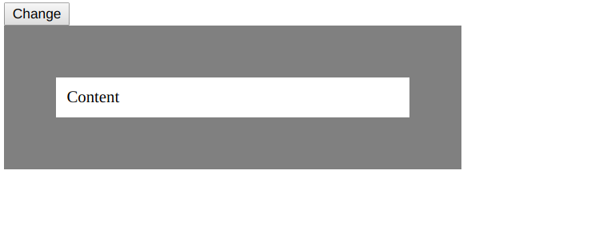
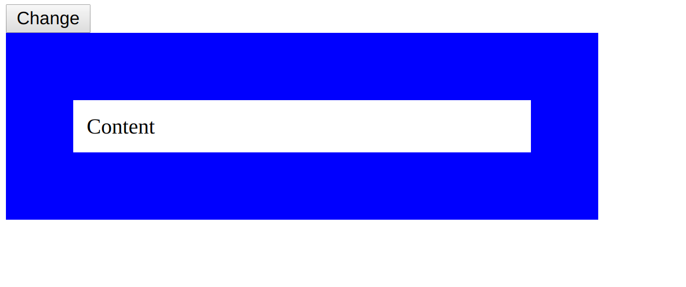

Binds the style attribute of the html element to the data object property of the vue, in this
case baseClass. Comparing to :class which uses static css, with
:style we can you json to add or remove the css properties.
<div id="app">
<button v-on:click="changeClass">Change</button>
<div :style="baseClass">Content</div>
</div>
main.js
var app = new Vue({
el: '#app',
data: {
baseClass: {
width: '320px',
padding: '10px',
border: '50px solid blue',
margin: '0'
},
styleGray: {
width: '320px',
padding: '10px',
border: '50px solid gray',
margin: '0'
}
},
methods: {
changeClass: function () {
this.baseClass = this.styleGray
}
}
}
)
on Browser
click on the change button changes color
